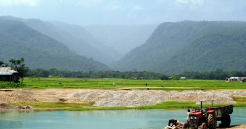
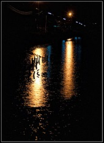
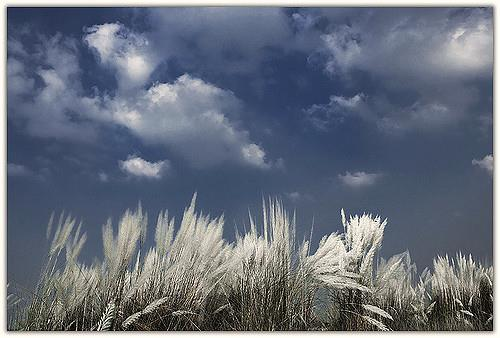
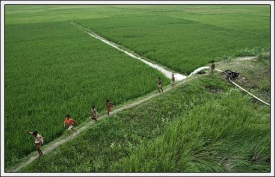
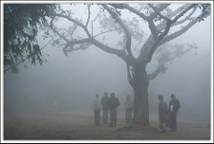
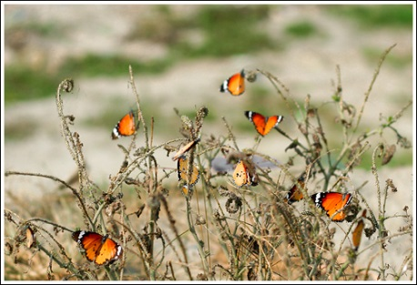

Unlike most of the countries, which have four seasons, Bangladesh is blessed with six seasons:
They are:
1: Summer
2: Rainy
3: Autumn
4: Late Autumn
5: Winter and
6: Spring.
Summer
Summer is the first season of the year. It consists of the months of Baishakh and Jaistha. During this period the days are longer than the nights. It is the warmest season of the year. It is rich in juicy fruits. Fruits of different kinds and sizes such as mango, lichi and jackfruit ripen during this season and create a festive mood among the rural people.
Rainy
The month of Ashar and Srabon are called the rainy season. It’s come after the summer. It comes after the summer. It is both a blessing and a curse for us. During this season the sky is overcast with the black clouds. Sometimes it rains days together. Too much of rains cause floods. The flood causes untold suffering.
Autumn
Bhadra and Ashhin make autumn. It comes after the rainy season. During this season the sky becomes cloudless. It is the season of peace and plenty. The fields become full of crops.
Late autumn
The month of Kartik and Agrahayan consist of late autumn. It begins just after the Autumn. During this season paddy begins to ripe. Dew begins to fall towards the end of the late autumn.
Winter
The month of Pous and Magh are called winter.It appears after the late autumn .During this season natural looks dull and gloomy.The days are shorter and night are longer. During this season the cold wind blows from the north.Dew full at night .Dew drops glitter in the morning sun.Leaves fall of the trees.
Spring
The month of falgoon and chaitro are called spring .It is the last season of a year .It is called the queen of all season .The spring is the loveliest of all the season of the year. It is the season of flower and birds. Trees get new leaves and birds sing sweet songs. The sky is clear and cloudless. Bees fly flowers to flowers and gather honey.
